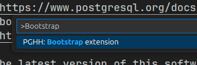
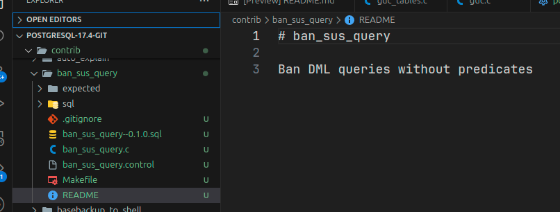
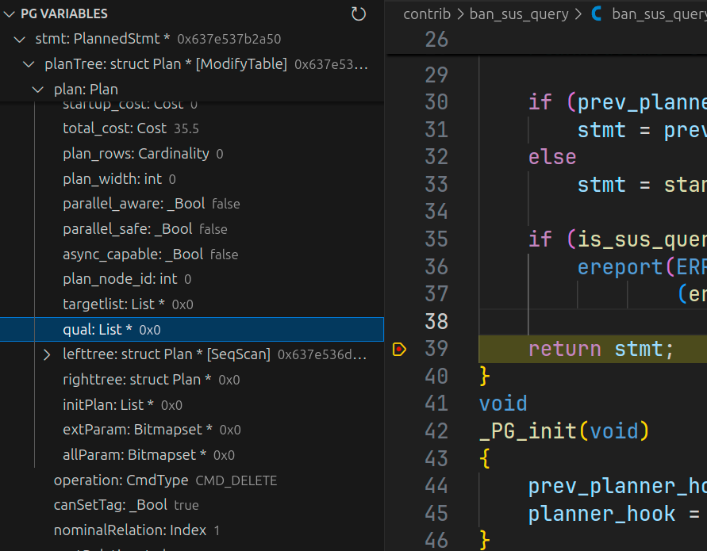
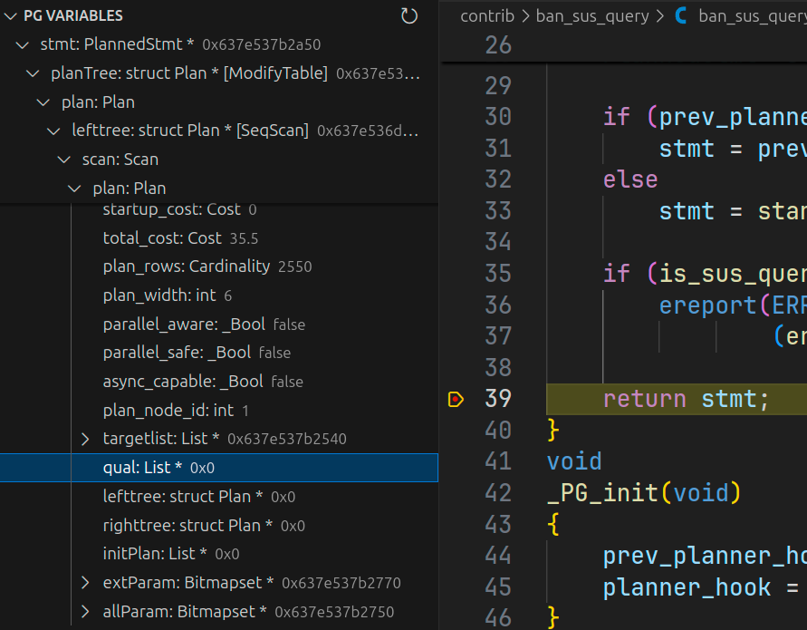
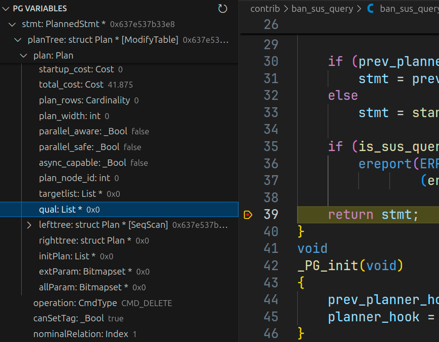
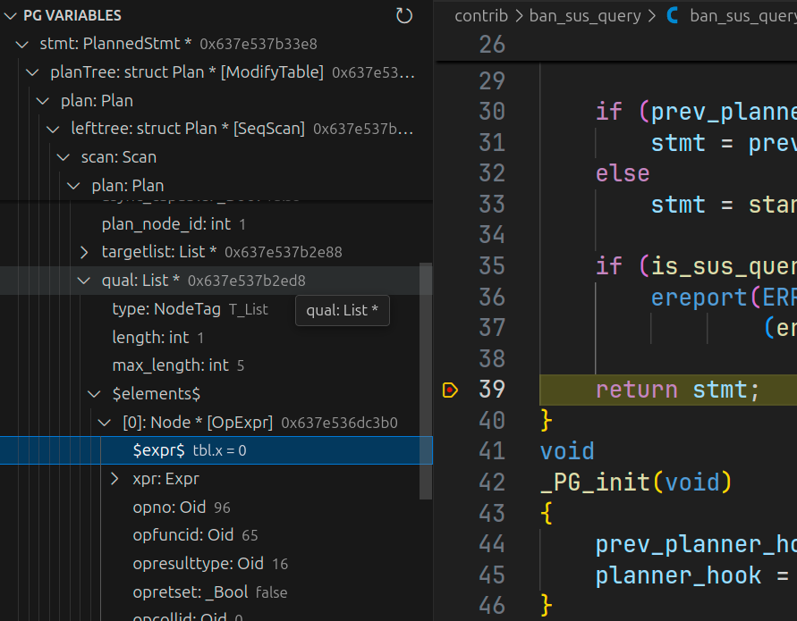
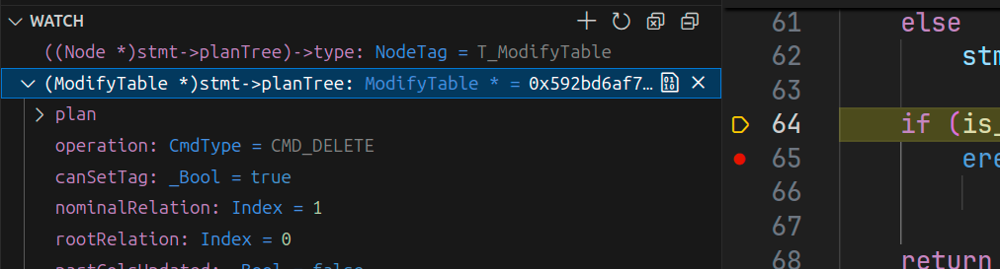
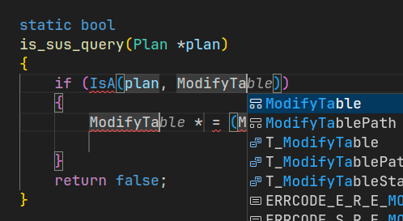
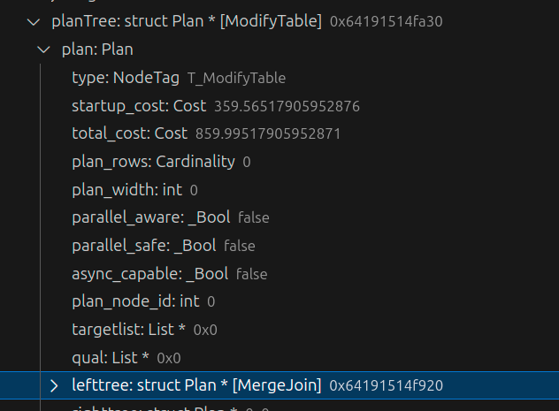
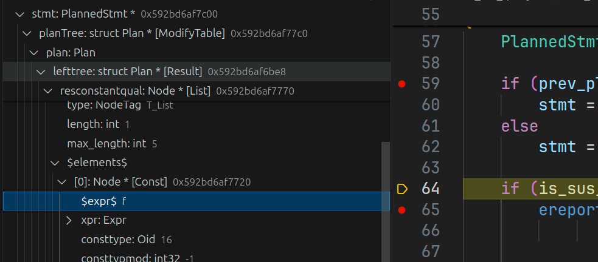

Tutorial: creating extension
In this tutorial we will create extension ban_sus_query. It will check that DML queries contain predicates, otherwise will just throw an error.
Next, in order not to mislead up, I will use term
contribfor PostgreSQL extension, and forextensionfor PostgreSQL Hacker Helper VS Code extension.
Creating initial files
PostgreSQL has infrastructure for contrib building and installation. In short, contribs have a template architecture - most parts are common for all.
So, for faster contrib creation we will use command: PGHH: Bootstrap extension.

It will prompt us to bootstrap some files - choose only C sources.
After that we will have our contrib files created:

Initial code
Query execution pipeline has 3 stages:
- Parse/Semantic analysis - query string parsing and resolving tables
- Plan - query optimization and creating execution plan
- Execution - actual query execution
Our logic will be added to the 2 stage, because we must check real execution plan, not Query. This is because after multiple transformations query can be changed in multiple ways - predicates can be deleted or added, therefore we may get a completely different query than in the original query string.
To implement that we will create hook on planner - planner_hook. Inside we will invoke actual planner and check it's output for the existence of predicates.
Starter code is the following:
#include "postgres.h"
#include "fmgr.h"
#include "optimizer/planner.h"
#ifdef PG_MODULE_MAGIC
PG_MODULE_MAGIC;
#endif
static planner_hook_type prev_planner_hook;
void _PG_init(void);
void _PG_fini(void);
static bool
is_sus_query(Plan *plan)
{
/* ... */
return false;
}
static PlannedStmt *
ban_sus_query_planner_hook(Query *parse,
const char *query_string,
int cursorOptions,
ParamListInfo boundParams)
{
PlannedStmt *stmt;
if (prev_planner_hook)
stmt = prev_planner_hook(parse, query_string, cursorOptions, boundParams);
else
stmt = standard_planner(parse, query_string, cursorOptions, boundParams);
if (is_sus_query(stmt->planTree))
ereport(ERROR,
(errmsg("DML query does not contain predicates")));
return stmt;
}
void
_PG_init(void)
{
prev_planner_hook = planner_hook;
planner_hook = ban_sus_query_planner_hook;
}
void
_PG_fini(void)
{
planner_hook = prev_planner_hook;
}
Now we are ready to add "business-logic", but before let's understand how such suspicious queries look like.
Examine queries
Suspicious query - is a DELETE/UPDATE query that does not contain predicates.
One of the benefits that we are checking already planned statements is that all predicates are already optimized in a sense that boolean rules are applied.
Query plan - is a tree of Plan nodes. Each Plan contains lefttree/righttree - left and right children and qual - list of predicates to apply at this node. But we must check only UPDATE/DELETE nodes, not each node, - nodes for them is ModifyTable.
Thus our goal is:
traverse query tree, find
ModifyTableand check that it'squalis not empty
But, before run sample queries to look what their queries looks like (inside) and which predicates they have.
For tests we will use this setup:
-- Schema
CREATE TABLE tbl(x int);
-- Test queries
DELETE FROM tbl;
DELETE FROM tbl WHERE x = 0;
UPDATE tbl SET x = 1;
UPDATE tbl SET x = 1 WHERE x = 0;
To do this we will use our contrib - install it using make install, add to shared_preload_libraries='ban_sus_query' and put a breakpoint to return in ban_sus_query_planner_hook function.
When we run first DELETE query without predicate, we will see the following:
-
PlannedStmtcontains top-levelModifyTablewith emptyquallist
-
Inner
SeqScanalso contains emptyquallist
Now run DELETE query with predicate:
-
PlannedStmtstill contains emptyquallist
-
Inner
SeqScannow containsqualwith single element - equality predicate
This is no surprise, because our ModifyTable does not apply any filtering - it just takes tuples from children (note, that by convention single-child nodes store them in lefttree), so it's qual is empty, but filtering is applied to SeqScan - we must check this.
As you can mention, extension shows all Node variables with actual types, without showing generic
Planentry. Also extension is able to show you elements of container types (List *in this example). More than that, it rendersExprnodes (expressions) as it was in a query, so you do not have to manually check each field, trying to figure out what expression it is.In vanilla PostgreSQL you would have to evaluate 2 expressions: (first) get
NodeTagand (second) cast variable to obtainedNodeTag. In this example, to showstmt->planTreeall you need to do is expand the tree node in variables explorer, but manually (without extension), you need to evaluate (i.e. inwatch) 2 expressions/steps:
((Node *)planTree)->typegetT_ModifyTable- tag ofModifyTablenode, and then(ModifyTable *)planTree- show variable with real type.
Such manipulations take roughly 5 second, but, as this time accumulates, totally it can take up to 1 hour in a day - just to show variable's contents!
But there is not such support for
Exprvariables - you will not see their representation. For this you have to dump variable to log usingpprintfunction, which is not very convenient when you developing in IDE.
Now we are ready to write some code.
is_sus_query implementation
I repeat, our goal is to traverse query tree, find ModifyTable and check that it's qual is not empty, but now we can refine it:
Search for
ModifyTableinPlantree and check that it's children have non-emptyquallist
As tree traversal is a recursive function, we will use 2 recursive functions:
is_sus_query- main function that traverses plan tree to findModifyTablenode, and when it finds one invokes...contains_predicates- function that checks that thisPlannode contains any predicate in a query
Let's start with is_sus_query. All we have to do here is to check that Plan is a ModifyTable and if so, then check that it's children contain predicates.
Node type checking is a frequent operation, so extension ships with some snippets - one of them is a isaif, which expands to if(IsA()) check:

When we have determined, that it is a DML operation check that it is DELETE or UPDATE, because ModifyTable is used for other operations, i.e. INSERT. This is not hard - just check operation member.
static bool
is_sus_query(Plan *plan)
{
/* ... */
ModifyTable *modify = (ModifyTable *)plan;
switch (modify->operation)
{
case CMD_UPDATE:
case CMD_DELETE:
/* Check predicates */
break;
default:
break;
}
/* ... */
}
And now check these operations contain predicates using contains_predicates function (will be defined further).
Also, do not forget to handle recursion: call is_sus_query for children and handle end case (NULL).
The result function looks like this:
static bool
is_sus_query(Plan *plan)
{
/* Recursion end */
if (plan == NULL)
return false;
if (IsA(plan, ModifyTable))
{
ModifyTable *modify = (ModifyTable *)plan;
switch (modify->operation)
{
case CMD_UPDATE:
case CMD_DELETE:
return !contains_predicates(modify->plan.lefttree);
default:
break;
}
}
/* Handle recursion */
return is_sus_query(plan->lefttree) || is_sus_query(plan->righttree);
}
contains_predicates implementation
Now perform actual checking of the predicates existence using contains_predicates. Inside this function we must check that given Plan contains predicates.
But situation is complicated by the fact that only base Plan is given and we do not know actual query. For example this query:
DELETE FROM t1 using t2 where t1.x = t2.x;
Will contain JOIN in lefttree of ModifyTable:

Thus we have to clarify what does contains_predicates must check. In order not to complicate things a lot, we will just find first node with any predicate.
static bool
contains_predicates(Plan *plan)
{
if (plan == NULL)
return false;
if (plan->qual != NIL)
return true;
return contains_predicates(plan->lefttree) || contains_predicates(plan->righttree);
}
Testing
First things first - test on example queries we defined above:
postgres=# delete from tbl;
ERROR: DML query does not contain predicates
postgres=# delete from t1 where x = 0;
DELETE 0
postgres=# update tbl set x = 0;
ERROR: DML query does not contain predicates
postgres=# update tbl set x = 0 where x = 0;
UPDATE 0
It's working as expected.
Also, as we injected our contrib as the last step, we can handle more complicated cases, like:
postgres=# delete from t1 where true;
ERROR: DML query does not contain predicates
Further improvements
This is just the beginning of the contrib, because there are lot's of corner cases that are not handled.
For example, if we change true to false in last query, then we still will get an ERROR.
That is because the database has realized that subquery will not return anything, so replaced with "dummy" Plan - Result node with FALSE one-time check, so nothing will be returned:

Result
So far we have seen how you can quickly create new contrib using single command that will create all necessary files.
To write some templated code, we used isaif snippet to quickly add check for Node type.
Also, we have traversed query plan tree and saw it's nodes, without requirement to obtain NodeTag and cast to given type, which incredibly boosts performance.
And like the icing on the cake we saw expression representations of predicates. For our purposes this is not a very big deal, because query contained only 1 predicate, but in large queries with dozens of different predicates it's just a lifesaver.